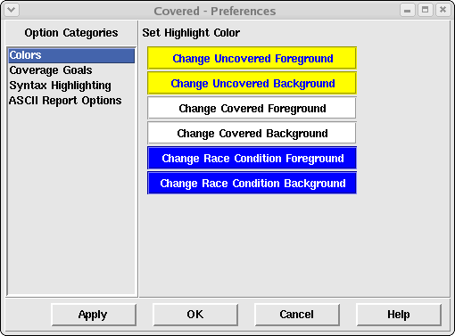

The color preference pane allows the user to adjust the foreground and background colors for all code that is considered covered, uncovered or in a race condition state.
Figure 1. The Color Preferences Pane
This frame contains six buttons that affect the foreground and background colors used to highlight code in the Coverage File Viewer portion of the main window. The currently selected foreground/background colors are displayed on the buttons themselves to allow the user to see the selections prior to committing to them by clicking the Apply or OK buttons at the bottom of the Preferences window.
Allows the user to specify the foreground color to use for logic that is not fully covered in the logic window. Figure 2. shows what the color selection window looks like.
Allows the user to specify the background color to use for logic that is not fully covered in the logic window. To view highlighted text, this color value should not be set to the same value as the "Uncovered Foreground" color. Figure 2. shows what the color selection window looks like.
Allows the user to specify the foreground color to use for logic that is fully covered in the logic window. Figure 2. shows what the color selection window looks like.
Allows the user to specify the background color to use for logic that is fully covered in the logic window. To view highlighted text, this color value should not be set to the same value as the "Covered Foreground" color. Additionally, to help distinguish covered logic from uncovered logic (when both information is viewed together), it is important that this color be different from the "Uncovered Background" color.
Allows the user to specify the foreground color to use for logic that was found to contain a potential race condition and was, therefore, eliminated from coverage consideration by Covered. Figure 2. shows what the color selection window looks like.
Allows the user to specify the background color to use for logic that was found to contain a potential race condition and was, therefore, eliminated from coverage consideration by Covered. To view highlighted text, this color value should not be set to the same value as the "Race Condition Foreground" color. Additionally, to help distinguish this type of logic from covered and uncovered logic (when either of these pieces of information are viewed together), it is important that this color be different from the other background colors.
Figure 2. The Color Selection Dialog Box

To adjust the color, simply move the arrows beneath the red, green, and/or blue color spectrums until the desired combined color (distinguished in the window in the lower right-hand corner of the window) is displayed. The user may also specify the 8-bit color value for red, green, and/or blue in the entry field to the left of each color spectrum. Finally, the user may specify the 6-digit hexidecimal color value in the entry field on the right-hand side of the window. Whenever the color is modified by using any of these controls, all of the other controls are changed to reflect the current color selected.